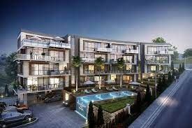
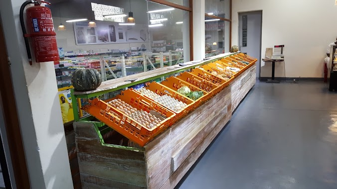
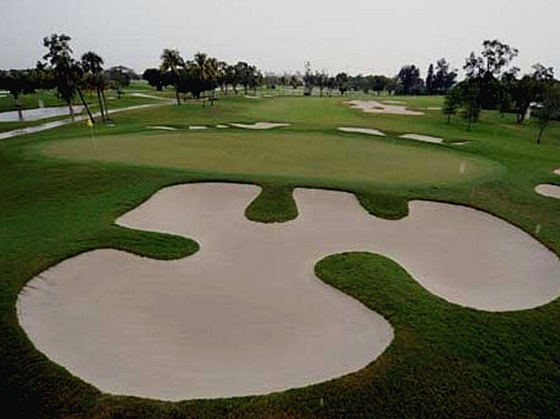

Pick your own go to place, Nyarutarama offers a range of facilities, restaurants, shopping malls, schools, and more. Making quite a place to live
Restaurants/Hotels
With a number of 5-start hotels, cafes and restaurants, here are a few of many you can try out!
Shopping
Shops are almost everywhere in Nyarutarama, from Sawa Citi, Dmall Supermarket to Haute Baso, there's little chances that you miss anything!
Sports/Fun
From Swimming Pools to gyms, Tennis and Golf clubs, there's a number of ways to break a sweat and care for our health in Nyarutarama
Nyarutarama in Kigali is a hidden gem! The neighborhood offers a perfect blend of tranquility and modern amenities. With its beautiful residential areas, lush greenery, and proximity to various attractions, Nyarutarama is an ideal place to live or visit in Kigali.